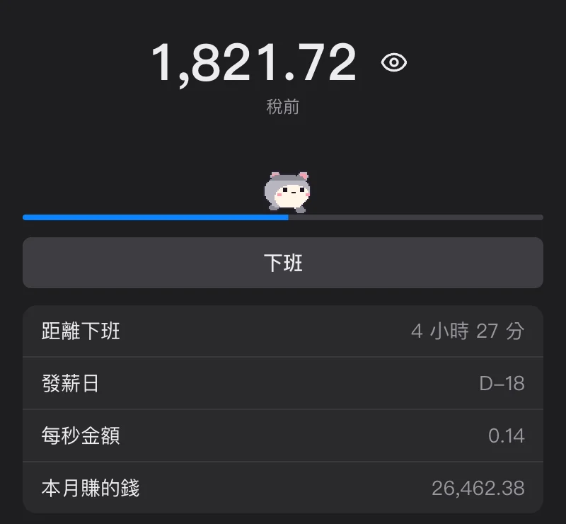
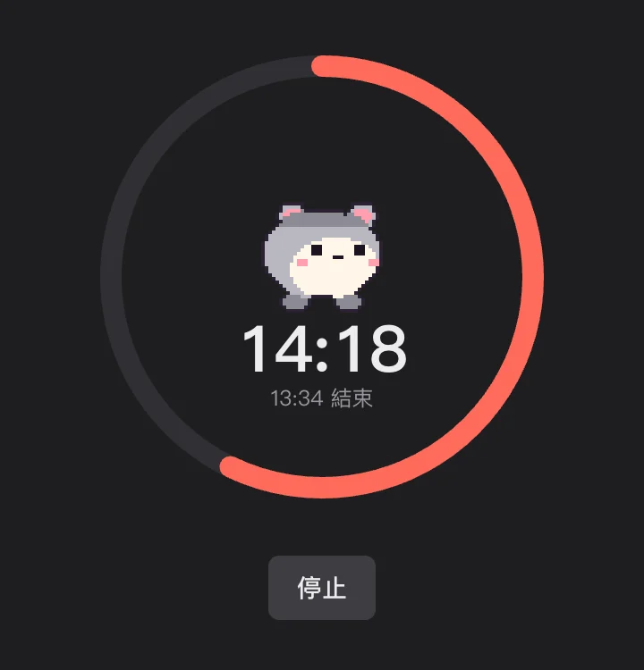

聊天
你說的話會浮在頭上
在聊天視窗打的字，會變成泡泡浮在朋友畫面上你的角色頭上。回覆、反應、編輯、已讀標記都有。
你寫的話會浮在朋友畫面上你的角色頭頂。
在聊天視窗打的字，會變成泡泡浮在朋友畫面上你的角色頭上。回覆、反應、編輯、已讀標記都有。
聊天室裡可以一次放好幾張照片、搜尋 GIF、顯示連結預覽。
畫一張送出，群組裡的大家都會收到。送的人耳邊會出現一張小卷軸，點下去就會照著畫的順序重畫一次。
訊息和照片都上鎖後才送出，24 小時後就刪掉。沒有廣告，沒有分析工具。
點一點、拖一拖、摸一摸朋友的角色。
點一下朋友的角色，你挑的道具就會畫出弧線飛過去打中他。
在他身上晃一晃滑鼠，愛心就會冒出來。
一直餵他就會慢慢變大，一分鐘內吃十次左右就會便便。用掃把掃掉。
在訊息裡夾 :表情:，或是打招呼、開心、吃東西、跳躍動作。
自己的角色和對話框自己選。
用圖像 AI 給你的一張圖或自己畫的圖，製作角色、道具和表情。 製作方法
萬聖節時點一下南瓜燈就會噴出糖果，自己泡泡的顏色和裝飾也自己挑。
工作時陪在你身邊。
今天賺的錢按秒往上漲。可以顯示在角色頭頂，也能用快捷鍵隱藏金額。年薪只存在這台裝置上。

選 15、25、50 分鐘或設好結束時間，在那之前會隱藏朋友的角色。朋友會看到「沉浸中」，朝你丟東西時你會說「噓！」。

把滑鼠移上去就會看到那位朋友的狀態文字。離開一下是 z，離開久了是 Zzz，關掉 App 就會變淡。
不用安裝，手機瀏覽器就能進同一個聊天室。用手機進來的朋友，會變成藍色的靈魂浮在電腦畫面上的身體上。
公司的朋友、附近的朋友。群組可以切換，每個聊天視窗也能看不同的群組。
點一下、拖一下、打字叫他，或從選單裡挑。
說話
玩鬧
裝飾
掌握
完整清單可以在 App 系統列選單的 功能一覽… 裡看到。
免費使用。可以上傳的角色、道具數量有上限。拿邀請碼，或是自己開新群組。
免費使用。可以上傳的角色、道具數量有上限。
訊息和照片會先上鎖再送出，所以像公司網路這種中間的路徑看不到內容。24 小時後就刪掉。
手機是用網頁進同一個聊天室。角色玩鬧的部分在電腦 App 上。
可以。上傳圖片或拜託 AI 都行。請看 製作方法 頁面。
請跟下載欄下方的 SHA-256 比對看看。Windows 可以在 PowerShell 用 Get-FileHash 檔案路徑，Mac 可以在終端機用 shasum -a 256 檔案路徑 查看。
Mac 請到系統設定 > 隱私權與安全性選「仍要打開」，Windows 請按「其他資訊」> 「仍要執行」。